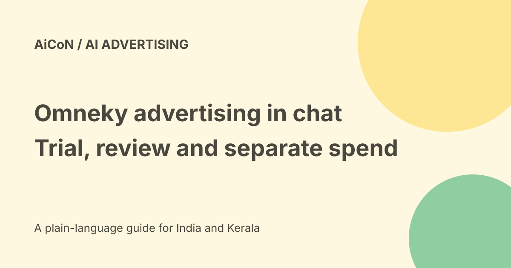

Omneky in ChatGPT: ad workflows, trial and spending limits
Omneky announced a ChatGPT plugin for its advertising and go-to-market agent on 24 September 2026. The release describes creating, launching and reporting on campaigns from chat. Its current pricing page now lists paid plans and seven-day trials, so the archive's no-public-pricing statement is no longer accurate.

What the agent connects
The release describes a brand-specific harness: product information, audience context, performance history and tools around a model. It names multiple ad channels and data sources, including brand files, analytics, SEO data and CRM records.
This is Omneky's stated integration scope. It does not establish that every connector is enabled in your plan, every channel approves your campaign or every account has equal access.
Creative production versus publishing
Generating a draft ad, approving its creative and launching paid media are separate steps. A chat request for an idea does not need to become a live campaign.
Review the audience, geography, landing page, claims, imagery, daily budget and stop date together. Advertising spend and public wording should not be changed silently because an agent found a new opportunity.
Current public subscription prices
The checked pricing page lists Lite at US$29 per month, Standard at US$99 and Pro at US$249. At a Wise reference rate of about ₹96.47 per dollar, those are approximately ₹2,798, ₹9,550 and ₹24,022 per month.
Its annual-billing monthly equivalents are US$24, US$79 and US$199, roughly ₹2,315, ₹7,621 and ₹19,197. Annual billing is not a promise of monthly cancellation or a monthly-only commitment.
These are explanatory conversions, not final Indian checkout totals. Taxes, foreign-exchange fees and the actual payment rate can differ. Enterprise pricing is custom.
Credits, brands and seats
The page lists two hundred, one thousand and four thousand credits for Lite, Standard and Pro, with one, three or five brands and seats.
Top-ups are described as ten credits per US dollar with no expiry. One dollar is about ₹96.47 at the checked reference rate. The cost of each action and the exact feature entitlement still need current account terms.
A credit allowance is not a media-spend budget. Do not assume a subscription pays Meta, Google or another channel's advertising bill.
Seven-day trial boundaries
Lite, Standard and Pro are described as starting with a seven-day free trial. We did not verify card requirements, automatic renewal, cancellation deadline or refunds in a checkout.
Read those terms before starting. No account, trial, card charge, top-up or campaign was created here. A trial invitation is not permission to spend on ads.
A careful evaluation sequence
- Confirm the account, plan and required connector.
- Read trial and renewal terms before subscribing.
- Use a small approved brand brief without private customer data.
- Generate draft creatives first.
- Check product claims, rights and landing-page accuracy.
- Inspect which ad accounts and data sources are connected.
- Review audience, spend cap, duration and stop controls.
- Approve any live campaign separately.
- Compare reports with the ad platforms' source data.
The article explains preparation rather than presenting an untested installation menu.
Performance claims need evidence
The release quotes the CEO saying customers typically see a two-times ROAS lift and that its approach was trained on over a billion dollars of ad spend.
ROAS means return on advertising spend. Those are company claims, not an independent guarantee for a new brand. Baseline, attribution window, product margin and measurement method can change the conclusion.
A reported purchase may be attributed differently across platforms. Compare the actual sales record, ad spend and methodology before celebrating a result.
Connected-data privacy
CRM contacts, deals, analytics and brand files may have different access and disclosure limits. A connector's technical access does not authorise exporting every customer record to every model.
Review requested scopes, retention, subprocessors and who can publish or spend. Keep confidential information out of a trial until the organisation approves the handling.
India and channel eligibility
No Indian checkout, tenant or ad account was tested. Channel availability, billing currency and advertising policies can vary.
Use current platform policy for regulated products, sensitive targeting and AI-generated representations. The broad channel list is not a guarantee that an Indian account can run every format.
What changed since the original post?
We add current public pricing and credits, label INR conversions, keep performance statements as company claims and separate trial access, creative approval and real media spending.
Frequently asked questions
Is pricing still unavailable?
The checked page now lists Lite, Standard and Pro amounts.
Does the subscription include all ad spend?
No such inclusion was established.
Was a live ad launched?
No.
Sources: Omneky-issued plugin announcement · Current official pricing · Official product page · Wise conversion reference. Checked 7 October 2026.